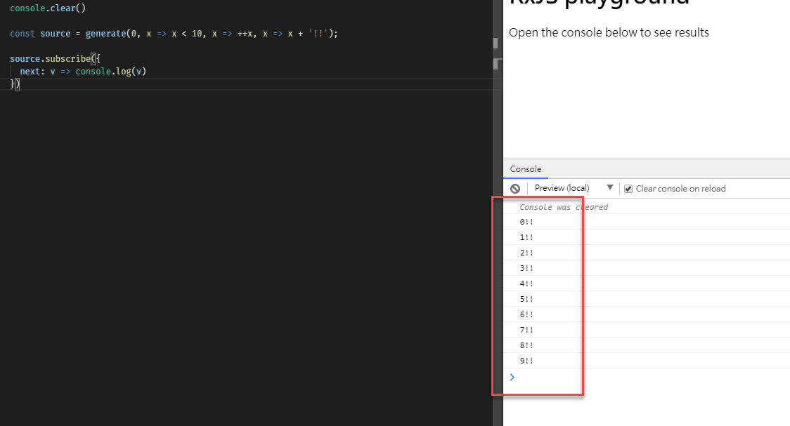
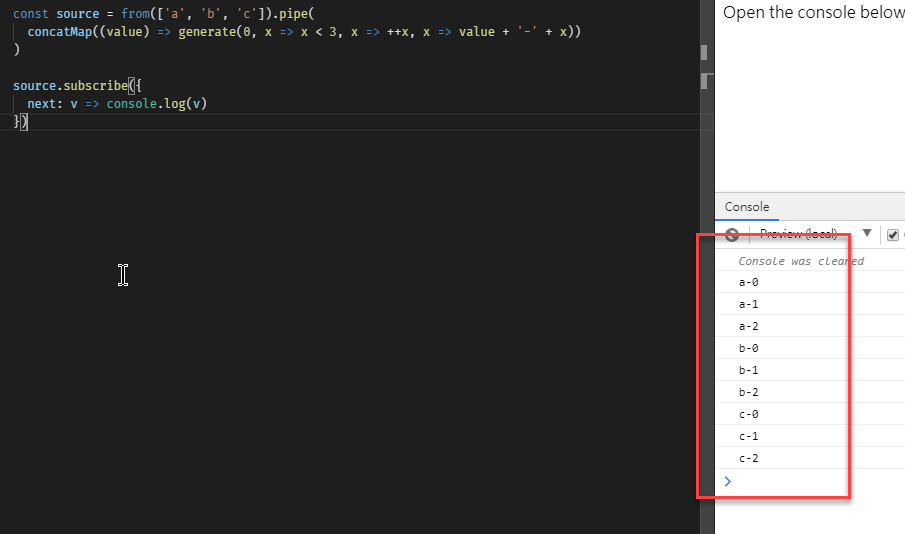
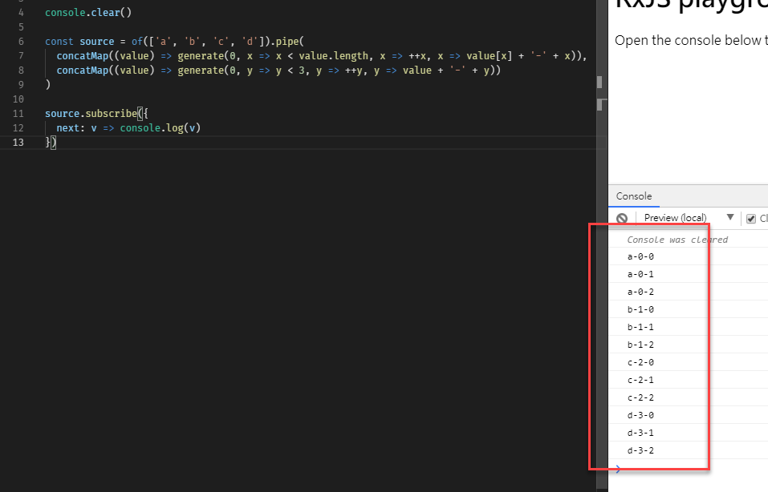
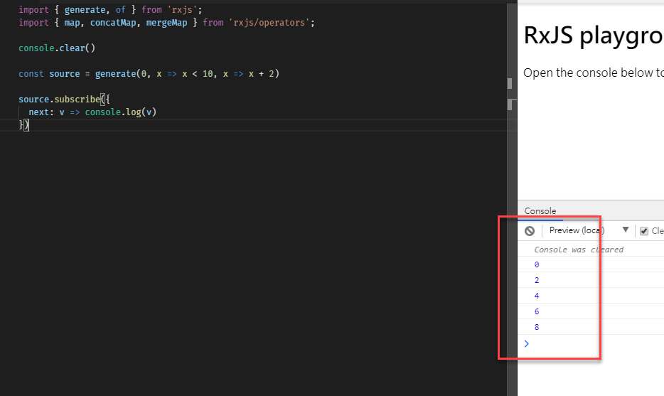

[RxJS] generate
generate 是 RxJS 裡面的 for loop 方法，這樣的描述應該夠簡單明瞭了
基本用法
這是 JavaScript for loop 的寫法
1 | for(let i=0; i< 100; ++i){ |
而這是 RxJS 使用 generate 的寫法
1 | generate(0, x=> x< 100, x=> ++x) |
generate 介面
1 | generate<T, S>(initialStateOrOptions: S | GenerateOptions<T, S>, condition?: ConditionFunc<S>, iterate?: IterateFunc<S>, resultSelectorOrObservable?: (ResultFunc<S, T>) | SchedulerLike, scheduler?: SchedulerLike): Observable<T> |
變化用法
with resultSelector
1 | const source = generate(0, x => x < 10, x => ++x, x => x + '!!'); |
輸出結果

串接其他 observable
-
with from
1
2
3
4
5
6
7const source = from(['a', 'b', 'c']).pipe(
concatMap((value) => generate(0, x => x < 3, x => ++x, x => value + '-' + x))
)
source.subscribe({
next: v => console.log(v)
})
-
double generate
1
2
3
4
5
6
7
8const source = of(['a', 'b', 'c', 'd']).pipe(
concatMap((value) => generate(0, x => x < value.length, x => ++x, x => value[x] + '-' + x)),
concatMap((value) => generate(0, y => y < 3, y => ++y, y => value + '-' + y))
)
source.subscribe({
next: v => console.log(v)
})
range 效果
RxJS 裡面原本就有一個 range 的 observable，但是卻沒有辦法設定 step，這時候就可以使用 generate 來完成這件事情
1 | const source = generate(0, x => x < 10, x => x + 2) |
